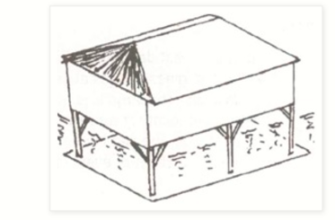
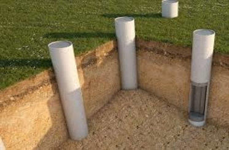

Architecture To Tackle Housing Problem In
Sea-Leveled Terrain
FOUNDATION
- To construct a suitable foundation for a house as the stability of a building
depends
primarily on its
foundation. Buildings usually have shallow foundation on stiff sandy soil and deep
foundations in
liquefiable or expansive clayey soils.
-
It is desirable that information about soil type be obtained and estimates of safe
bearing capacity made from the available records of past constructions in the area
or by
proper soil investigation. In addition the following parameters need to be properly
accounted in the design of foundation.
- Invariably a cyclonic storm is accompanied by torrential rain and
tidal surge (in coastal areas) resulting into flooding of the low lying areas. The
tidal
surge effect
diminishes as it travels on shore, which can extend even upto 10 to 15 km. Flooding
causes
saturation of soil and thus significantly affects the safe bearing capacity of the
soil.
-
In flood prone areas, the safe bearing capacity should be taken as half of that for
the
dry ground. Also the
likelihood of any scour due to receding tidal surge needs to be taken into account
while
deciding on the depth of foundation and the protection works around a raised ground
used
for locating cyclone shelters or other
buildings.
- Where a building is constructed on stilts it is necessary that stilts are properly
braced in both the
principal directions. This will provide stability to the complete building under
lateral
loads.
-
Knee bracings will be preferable to full diagonal bracing so as not to
obstruct the passage of floating debris during storm surge.

Slab or Raft Foundation
- Used on soft soils.
- Spread the weight over a wider area
Strip Foundation
- Used for areas where the soil varies.
- Most common.
- Supports a wall.
Stepped Foundation
- Used on sloping ground.
- Is a form of strip foundation
Pile Foundation
- Are deep foundations for small or large buildings.
- Under reamed piles often used in expansive clay or alluvial soils.

Pad Foundation
- Used on firm soil.
- Used for columns & poles.
STRUCTURE
- Shape is the most important single factor in determining the performance of
buildings
in cyclones. Simple, compact, symmetrical shapes are best.
-
The
square plan is better than the rectangle since it allows high winds to go around
them.
The rectangle is
better than the L-shaped plan. This is not to say that all buildings must be square.
But
it is to say that one
must be aware of the implications of design decisions and take appropriate action to
counter negative features.
The best shape to resist high winds is a square.
-
If longer shapes are used, they must be designed to withstand the forces of the
wind.
Most houses are rectangular and the best layout is when the length is not more than
three (3) times the width.In order to lessen the effect of the uplifting forces on
the
roof, the roof Pitch should not be less than 22º. Hip roofs are best, they have been
found to be more cyclone resistant than gable roofs.
WALLS
- In the case of masonry walls, in the majority of house constructions in India, a
continuous band of reinforced concrete beam is provided at plinth level to take care
of differential settlement.
-
When the soil conditions are poor, a bond beam is also
provided at lintel level.
-
Floor and roof slabs of reinforced concrete provide adequate restraint to the
masonry walls at top. Reinforced bond beams are to be provided in
shed-type structures at the top to increase their lateral resistance against wind
forces.
-
Also, provision of anchorage, in the form of tie-down bolts, between foundation and
bond beam is essential for further improving the resistance against cyclonic forces.
-
The resistance of free-standing compound walls to lateral high wind forces can be
improved by either staggering the walls and/or by reducing the spacing of the brick
pilasters or RC pillars or by tying down the wall to the foundation using tie-down
bolts at suitable intervals.
ROOF
- Lightweight flat roofs are easily blown off in high winds. In order to lessen the
effect
of the uplifting
forces on the roof, the roof Pitch should not be less than 22º.
- Hip roofs are best, they have been found to be more cyclone resistant than gable
roofs.
- If the rafters are not secure, the ridge can
fall apart when strong wind passes over
the roof.
- The ridge can be secured by using:-
- COLLAR TIES - Timbers connecting the
rafters. Nail them to the side of the rafters.
- GUSSETS - Usually made of
steel/plywood. This is used at the ridge.
- METAL STRAPS over the top of the rafters.
PROPOSED 3-D MODEL